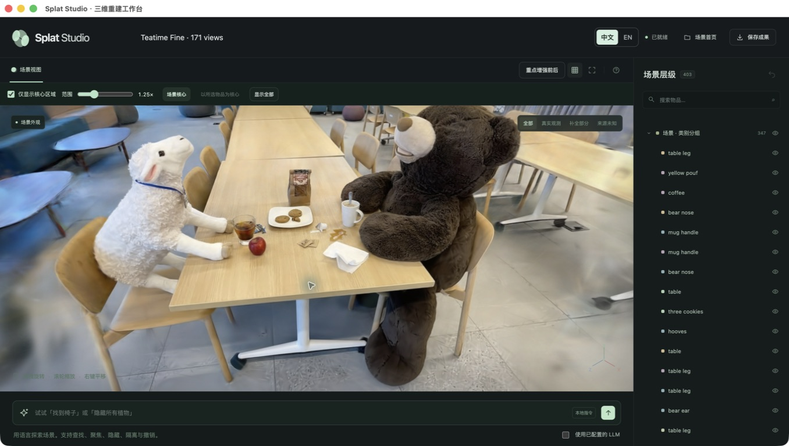

PHOTOS → GEOMETRY → SEMANTICS → INTERACTION
把照片变成可以操作的三维场景
Turn photographs into an interactive 3D scene.
完整视角与六视角两条实际训练流程：重要物品审核、精细重建、多视角层级语义，以及原生 App 中的浏览与编辑。
Two actual training workflows, with full input and six views: priority-region review, Fine reconstruction, multi-view hierarchical semantics, and exploration in the native App.
171 / 6 张输入input photos22,000 RGB stepsNVIDIA A100Native App · 中文 / EN

整体画质 · 171 张输入Overall · 171 inputs26.08 dBPSNR · SSIM 0.867PSNR · SSIM 0.867
重点细节 · 咖啡杯Priority detail · coffee mug0.9215 个测试视角，平均区域 SSIM5 test views, mean ROI SSIM
语义区域 · 小熊玩偶Semantic region · stuffed bear94.2%171 张输入，跨视角汇总 IoU171 inputs, pooled multi-view IoU
整体与重点区域使用未参与训练的照片评测。咖啡杯卡片取两个预先指定重点类别中平均区域 SSIM 较高者；语义卡片展示至少两个标注视角上的最佳类别汇总结果。完整 mIoU、全部类别、测试覆盖和对照图见精度评测。Overall and priority scores use held-out photos. The coffee-mug card has the higher mean ROI SSIM among the two predeclared priority categories. The semantic card highlights the best pooled class among classes with at least two annotated views. Full mIoU, every class, test coverage and comparisons are available in Measurements.
查看完整精度评测Explore all measurements阅读系统与方法报告 →Read the system and methods report →01 / WORKFLOW
两种开始方式
Two ways to begin
从照片建立新场景，或导入已有重建继续浏览和编辑。中文与英文可以随时切换。
Build a new scene from photographs, or import an existing reconstruction to explore and edit. Switch between Chinese and English in place.
02 / WORKFLOW
先检查照片，再决定怎么重建
Check the capture before choosing a strategy
171 张输入照片具有较好的匹配连通性，App 建议直接重建。六张测试照片已提前留出，未进入训练。
The 171 input photos have strong match connectivity, so the App recommends standard reconstruction. Six test photographs were held out before training.
03 / WORKFLOW
告诉系统哪些物品更重要
Tell the system what deserves more detail
本次输入 stuffed bear 与 coffee mug。后续审核实际检测区域，确认后的掩码参与重点加权与细化训练。
This run prioritizes stuffed bear and coffee mug. Actual detected regions are reviewed before the approved masks drive weighted optimization and refinement.
04 / WORKFLOW
精细模式与云端 A100
Fine mode on a cloud A100
两组实验均选择精细模式：22,000 步 RGB 训练，全部有效训练视角参与语义优化。App 根据设备与预算显示预计时间。
Both experiments use Fine mode: 22,000 RGB steps with all valid training views included in semantic optimization. The App estimates time from the device and selected budget.
05 / WORKFLOW
审核并确认重点区域
Review and confirm priority regions
逐张核对识别区域，剔除误认和重复候选，再将确认结果加入训练。中文截图显示本次完整任务已确认 252 个照片区域。
Inspect candidate masks and border warnings before approval. The English capture shows review; the full task subsequently confirms 252 image regions for training.
06 / WORKFLOW
六张照片，触发稀疏策略
Six photos trigger the sparse route
照片连通性较低时，App 才建议稀疏重建与按需补全。本次训练实际使用学习几何初始化、跨视角深度约束与 3DGS 优化。
Low photo connectivity prompts sparse reconstruction with completion as needed. This run actually uses learned geometric initialization, cross-view depth constraints and 3DGS optimization.
07 / WORKFLOW
导入已有场景
Import an existing scene
选择仅外观或包含语义的场景。包含语义时，可以继续查找、定位和隐藏物品。
Choose appearance only or a scene with semantics. Semantic scenes support object search, focus and hiding.
08 / WORKFLOW
一个文件，恢复完整场景
One file restores the complete scene
导入已经完成训练的完整 JSONL。它包含高斯、三阶球谐系数、语义与层级，无需再选择独立语义包。
Import the trained JSONL, including Gaussians, degree-three SH, semantics and hierarchy. A separate semantic package is unnecessary.
09 / WORKFLOW
精细重建，在原生 App 中浏览
Explore the Fine reconstruction in the native App
171 张照片、22,000 步训练，完整载入 2,162,260 个高斯及三阶球谐系数。本画面启用核心区域显示；模型数据保持完整。
171 photos and 22,000 training steps produce 2,162,260 Gaussians, all loaded with degree-three SH. This view enables core-region visibility while retaining the complete model.
10 / WORKFLOW
查看重点细化的实际过程
Inspect the executed priority refinement
熊与咖啡杯使用总预算内最后 2,400 步细化，新增 16,000 个高斯。对照来自相同训练相机，三组结果及局部误差上升均保留，不将其作为独立消融增益。
The bear and coffee mug receive 2,400 refinement steps within the total budget, adding 16,000 Gaussians. Comparisons use the same training cameras; all three results, including local error increases, are retained and are not a matched ablation.
11 / WORKFLOW
查找物品，核对跨视角可信度
Find an object and inspect cross-view confidence
通过名称查找小熊，再选中具有部件层级的区域。面板显示该区域的 127,470 个高斯和 54% 跨视角可信度；此可信度不是分割 IoU。
Search for the bear and select a region with a parts hierarchy. The panel reports 127,470 Gaussians and 54% cross-view confidence for that region; confidence is distinct from segmentation IoU.
12 / WORKFLOW
隔离物品，检查局部三维区域
Isolate an object to inspect its 3D region
只显示选中的小熊区域及其层级后代，便于检查重建形状。画面保留真实预测中的残余噪声；隐藏其他物品不会删除原始数据。
Show the selected bear region and its hierarchy descendants to inspect the reconstructed shape. Residual prediction noise remains visible; hiding other objects does not delete source data.
13 / WORKFLOW
一句撤销，恢复场景
Undo restores the scene
执行 undo 后，刚才隔离的场景重新完整显示。撤销恢复显示状态，不需要重新训练或重新导入。
The undo command restores the scene after isolation. Visibility is restored without retraining or reimporting the model.
14 / WORKFLOW
按语义区域隐藏物品
Hide matching semantic regions
用 hide stuffed bear 隐藏匹配的小熊语义区域。截图保留真实的残余部件与遮挡区域，展示的是可撤销的可见性编辑；不会生成被物体遮挡的背景。
The hide stuffed bear command hides matching bear regions. Residual parts and occlusions remain as measured: this is reversible visibility editing and does not synthesize background hidden behind the object.
15 / WORKFLOW
六视角的实际重建成果
The actual six-view reconstruction
仅用六张训练照片，按需补全可见几何后完成 22,000 步训练。全部 84,748 个高斯及三阶球谐载入 App；画面保留稀疏输入产生的边缘残余。
Six training photographs, conditional visible-geometry completion and 22,000 training steps. All 84,748 Gaussians and degree-three SH load in the App; sparse-input edge artifacts remain visible.
16 / WORKFLOW
稀疏输入也执行重点细化
Priority refinement also runs with sparse input
六视角任务在总预算内执行最后 2,400 步重点细化，新增 16,000 个高斯。面板提供三组同相机的训练前后对照；独立测试视角指标另列于精度评测。
The six-view task executes 2,400 final refinement steps within its total budget, adding 16,000 Gaussians. The panel retains three same-camera training comparisons; held-out quality is reported separately in Measurements.
17 / WORKFLOW
用场景名称保存完整成果
Save the complete result under its scene name
实际通过原生保存窗口导出 Teatime Fine · 6 views.splat.jsonl。文件包含高斯、球谐、语义、层级与核心区域显示设置，可再次导入。
The native Save dialog exports Teatime Fine · 6 views.splat.jsonl, containing Gaussians, SH, semantics, hierarchy and core-region visibility settings for reimport.
18 / WORKFLOW
保存后再次打开，继续操作
Reopen the saved result and keep exploring
已将刚导出的文件重新导入原生 App。逐项核对全部 84,748 个高斯，几何、颜色、球谐与语义字段保持一致；层级和核心区域显示设置恢复。
The exported file is reimported in the native App. All 84,748 Gaussians preserve geometry, appearance, SH and semantic fields; hierarchy and core-region visibility settings are restored.